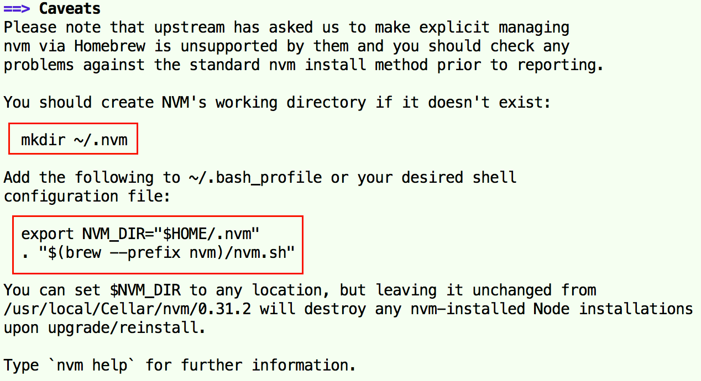

本地多个SSH Key配置使用
一、概述
- 执行
ssh-keygen -t rsa -C "xx@email.com"，回车确认，默认在~/.ssh/目录中生成名称为“id_rsa”的private key和“id_rsa_pub”的public key；注意：每次执行生成的key是不一样的； - 对于不同的网站（如github.com、gitee.com等），虽然是不同的账号，一般使用同一个key进行认证，也可以使用不同的key（配置.ssh/config）；
- 对于同一网站，若需要使用不同的账号，就需要配置不同的key（配置.ssh/config），同一个key只能用于一个账号；
Read more
2017/7/16
Ruby配置使用
一、安装
- Ruby安装方式有多种方式，可以通Ruby安装包、Homebrew、rbenv或RVM等方式；
- rbenv和RVM都可进行Ruby多版本管理，等同于Node.js中的nvm、Python中的pyenv；这里使用rbenv进行安装（rbenv的GitHub Star比RVM的多）；
-
第1步：安装rbenv
brew install rbenv
-
第2步：安装某个版本的Ruby；
rbenv install <VERSION>
-
Read more
2016/8/12
Python3配置使用
一、安装、卸载
-
Python的安装方式有多种方式，可以通过Python安装包、Homebrew、pyenv等方式；
-
建议使用pyenv进行安装，pyenv可以很好地进行Python多版本管理，等同于NodeJS中的nvm；这里使用pyenv进行安装；
-
第1步：安装pyenv；
brew install pyenv
-
Read more
2016/8/3
Node.js配置使用
一、安装、卸载
-
Node.js的安装方式有多种，可以通过Node.js安装包、Homebrew、nvm等方式；
-
nvm（Node Version Manager）可以很好地进行Node.js多版本管理；在这里使用nvm进行安装Node.js
-
第1步：安装nvm（安装方式也有多种，这里使用brew）；
brew install nvm
-
Read more
2016/7/25
Homebrew配置使用
一、概述
- Homebrew（简称brew）是macOS中的软件管理工具，可以方便地安装、更新、卸载软件，类似Ubuntu系统中的apt-get；
- **macOS默认安装了Python、Ruby、Perl、Apache/PHP等开发程序，但是版本比较旧；**若直接使用新版本替换系统的旧版本，会引发一些问题，Homebrew可以很好地将其安装的开发工具与系统默认的隔离开来；
二、安装、卸载
-
brew是基于Ruby运行的工具，必须先安装Ruby；
-
在终端中执行以下指令（可在
https://brew.sh/页面中获取）即可自动安装，路径为/usr/local/Homebrew/，其中/usr/local/Homebrew/Library/是brew系统的自身目录；/usr/bin/ruby -e "$(curl -fsSL https://raw.githubusercontent.com/Homebrew/install/master/install)"
Read more
2016/7/25
Copyright © 2015 Powered by ME